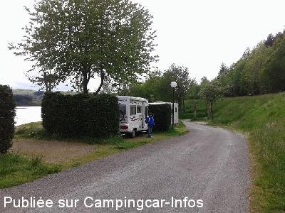
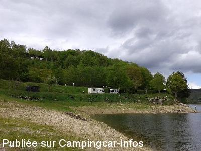
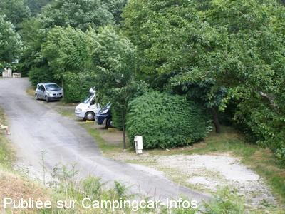
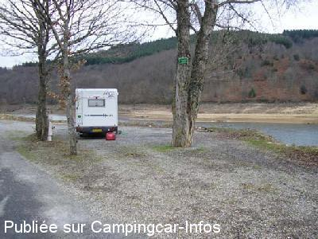
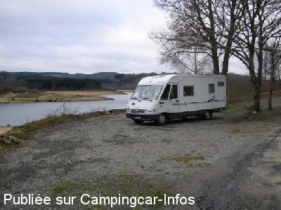
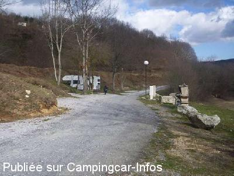

ASN = Aire de services avec stationnement nuit possible de :
NAGES
(N° 506)
Accès/adresse :
Lac de Laouzas, D162
81320 NAGES
81320 NAGES
Latitude : (Nord) 43.64687° Décimaux ou 43° 38′ 48′′
Longitude : (Est) 2.78199° Décimaux ou 2° 46′ 55′′
Tarif : 2013
Stationnement, services : 7 €
Tarif dégressif pour les nuitées suivantes
Type de borne : Autre
Services :


Tous commerces
Poubelles
Autres informations :
Ouvert toute l'année
15 emplacements
Tel : +33 (0) 563 374 576

Le 27/05/2014 par

Le 27/05/2014 par

Le 21/07/2009 par cricrimarie60

Le 04/02/2008 par asantkin

Le 04/02/2008 par asantkin

Le 27/02/2007 par bfredozza1
de
Tony47
le 27/05/2014 :
Tony & Kiki (47)
superbe aires de repos tout y est !
merci
Tony & Kiki (47)
superbe aires de repos tout y est !
merci
de
lacombe
le 22/04/2014 :
aire très bien située en bordure du lac de Laouzas ; prix très intéressant pour les services rendus ; de plus les tarifs sont dégressifs en fonction du nombre de nuits ; de passage le 15 avril 2014, nous avons apprécié l'ensemble, et nous y reviendrons pour faire du tourisme tout autour ; cerise sur le gâteau un spa au point information !
aire très bien située en bordure du lac de Laouzas ; prix très intéressant pour les services rendus ; de plus les tarifs sont dégressifs en fonction du nombre de nuits ; de passage le 15 avril 2014, nous avons apprécié l'ensemble, et nous y reviendrons pour faire du tourisme tout autour ; cerise sur le gâteau un spa au point information !
de
CALANDRE
le 03/07/2013 :
Bonjour à toutes et à tous
Nous confirmons rien que du bien sur cette aire au bord de l'eau. En juin une activité très calme de pécheur en petit bateau sur le lac. L'épicerie du camping à 5 mn au dessus , avec un resto plus que correcte. Prenez le temps de visiter le musée , l'entrée ne paie pas de mine, il y a tout de même 1800 m2 d'expo pour 3€.Nous avons été stupéfait par la diversité des installations et très peu de monde en juin .la crise?
gg
Bonjour à toutes et à tous
Nous confirmons rien que du bien sur cette aire au bord de l'eau. En juin une activité très calme de pécheur en petit bateau sur le lac. L'épicerie du camping à 5 mn au dessus , avec un resto plus que correcte. Prenez le temps de visiter le musée , l'entrée ne paie pas de mine, il y a tout de même 1800 m2 d'expo pour 3€.Nous avons été stupéfait par la diversité des installations et très peu de monde en juin .la crise?
gg
de
Marie
le 01/06/2013 :
§
Nous avons trouvé cette aire par hasard en faisant le tour du lac. Aire très sympa en bordure du lac, calme
Branchement éléctrique et services eaux très bien entretenus. Nous y étions le 9 mai et c'était pratiquement complet.
Tarif 7€ tout compris pour une nuitée.
§
Nous avons trouvé cette aire par hasard en faisant le tour du lac. Aire très sympa en bordure du lac, calme
Branchement éléctrique et services eaux très bien entretenus. Nous y étions le 9 mai et c'était pratiquement complet.
Tarif 7€ tout compris pour une nuitée.
de
coco34
le 20/04/2013 :
§ bonjour
aire au bord du lac trés bien faite avec d'elimitation des emplacements nouveau tarifs 7 euros 1 nuit, 6 euros 2 nuit, la 3 je ne sait pas j'ai continué la routes des lacs( j'espére qu'il ny a pas trop de camping car ventouse en pleine periode pour que les autres cc profite de cette aire avec edf est meme barbecue)
coco34
§ bonjour
aire au bord du lac trés bien faite avec d'elimitation des emplacements nouveau tarifs 7 euros 1 nuit, 6 euros 2 nuit, la 3 je ne sait pas j'ai continué la routes des lacs( j'espére qu'il ny a pas trop de camping car ventouse en pleine periode pour que les autres cc profite de cette aire avec edf est meme barbecue)
coco34
de
André Bourdelle
le 16/04/2012 :
aire très calme ,en bordure du lac , les emplacements sont spacieux ,je suis resté plusieurs jours fin mars et je n'ai pas vu de rats .La personne qui vient encaisser et très sympathique .les tarifs dégressifs , permettent de fidéliser les pêcheurs et les amoureux de cette belle région.
aire très calme ,en bordure du lac , les emplacements sont spacieux ,je suis resté plusieurs jours fin mars et je n'ai pas vu de rats .La personne qui vient encaisser et très sympathique .les tarifs dégressifs , permettent de fidéliser les pêcheurs et les amoureux de cette belle région.
de
BOSO
le 01/09/2010 :
De passage en août. L'aire est très agréable car juste en face du lac. Par contre, il y a des rats... L'électricité est juste en dépannage pour recharger les batteries comme spécifié sur le panneau.
De passage en août. L'aire est très agréable car juste en face du lac. Par contre, il y a des rats... L'électricité est juste en dépannage pour recharger les batteries comme spécifié sur le panneau.
de
lansalot
le 06/08/2009 :
Aire exemplaire de par sa situation et surtout son tarif 6.10€ avec electricité. De belles balades à pied à faire. §
Aire exemplaire de par sa situation et surtout son tarif 6.10€ avec electricité. De belles balades à pied à faire. §